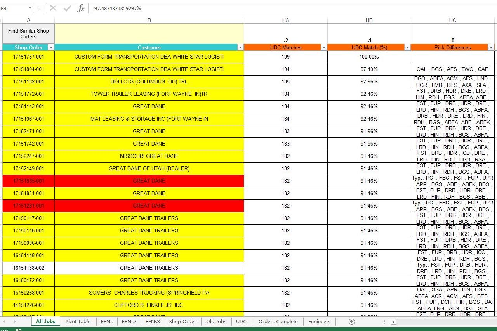

My Work
Find Similar Shop Orders


This is a macro that I am very proud of. I developed this for the engineering department during my time at Great Dane as a self-imposed process improvement project and it turned out to be a huge hit. The macro significantly reduced the amount of time it took to process orders because it eliminated a lot of redundant work and allowed tbe engineer to quickly locate references. See key features and benefits below:
- Allowed the engineer to enter a shop order and returned every order to date ordered by similarity.
- Showed the engineer the differences between the subject shop order and all other shop orders.
- Boasted a pivot table that allowed the engineer to filter previous orders based on specificed features